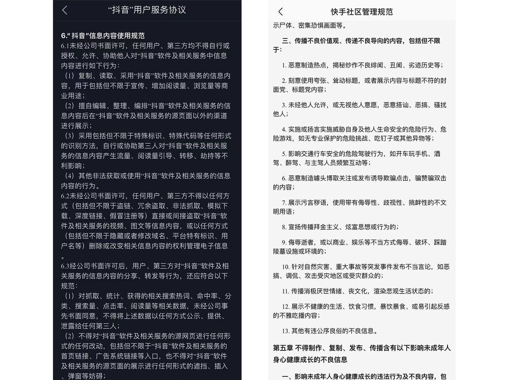
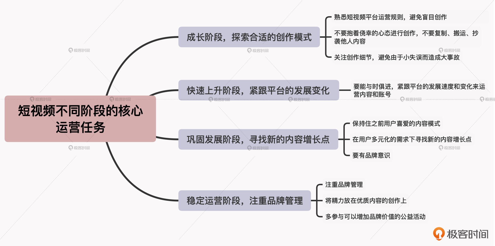

- 00 开篇词 短视频时代下，怎么把握好变现风口？.md
- 01 爆款短视频的底层逻辑：用心拍的短视频为啥没人看？.md
- 02 爆款短视频的底层逻辑：如何轻松打造自我特色？.md
- 03 精益创业法：如何快速跨过从0到1这道坎？.md
- 04 SWOT法：这么明显的个人优势你为啥就是看不到？.md
- 05 效用函数法：如何用量化的方式进行高效创作？.md
- 06 二次创新实验法：如何打造个人的差异化定位？.md
- 07 平台定位：如何选择最适合自己的创作平台？.md
- 08 如何快速找到各大短视频平台的正确切入点？.md
- 09 选题（上）：如何利用思考清单找到合适选题？.md
- 10 选题（下）：如何为不同的内容定制合适选题？.md
- 11 优劣分析法：如何快速筛选适合创作的视频素材？.md
- 12 标题（上）：如何利用微创新巧妙找到爆款标题？.md
- 13 标题（下）：如何用对号入座的方式抓住标题亮点？.md
- 14 视频封面（上）：如何快速抓住用户注意力？.md
- 15 视频封面（下）：如何传递最有价值的信息？.md
- 16 视频剪辑：如何轻松掌握视频化剪辑的三大公式？.md
- 17 效果反馈法：剪辑很容易，为什么你却一直学不会？.md
- 18 剪辑对比（上）：如何避开常见的短视频剪辑陷阱？.md
- 19 剪辑对比（下）：如何利用剪辑技巧提升视频质量？.md
- 20 拉片法：用电影创作的方式学习爆款短视频运营技巧.md
- 21 用户留存率：为什么粉丝很多但忠实拥趸却很少？.md
- 22 点赞率（上）：如何有效提升短视频的点赞量？.md
- 23 点赞率（下）：三种方法轻松提升用户对内容的认可度.md
- 24 上瘾机制：为什么视频观看量很高却没人留言？.md
- 25 避坑指南：为什么很多短视频账号中途做不下去了？.md
- 26 如何找到适合自己的短视频变现模式？.md
- 27 多元化变现：如何明确不同创作阶段的变现任务？.md
- 28 多内容变现：不同内容的主打变现模式是什么？.md
- 结束语 一切成大事者，都是终身学习者.md
25 避坑指南：为什么很多短视频账号中途做不下去了？
你好，我是周维。
短视频行业目前发展很快，确实有不少人凭借做短视频达成了职业目标，改写了自己的人生，但更多的人却是被远远抛在了后面，只能做那无数个“分母之一”。而究其原因，很多时候都是因为踩了不该踩的坑，走了很多弯路，最后就只能遗憾或无奈地中途下车。
那么在短视频运营的过程中，都有什么样的坑呢？我给你举几个例子：
- 作为短视频创作的新手，经常都是直接上传发布内容，结果有时候作品无缘无故会被限流、删除甚至是账号被重置；
- 为了做好短视频运营，已经投入了很多成本，既然最终运营的目标是要变现，那不如早点就开始引流，至少要把投入的成本赚回来，内容方面不着急，先研究怎么赚钱才是大事；
- 用心经营账号很长一段时间，不过最近不知道要做什么内容了，要不先歇歇，过一段时间再说，反正账号一直都在，什么时候创作都行。
说实话，短视频运营是需要分阶段的，你在不同的创作阶段所面临的运营任务都是不一样的，而很多创作者之所以会踩以上提到的这些坑，其实都是因为没有明确不同创作阶段的核心运营任务，从而导致自己的作品永远上不了热门、永远得不到推荐，最后只能潦草收场。
所以这节课，我就来给你介绍下短视频从入门到精通的不同阶段的运营任务，以及每个阶段中需要注意的坑点问题，以此帮助你的账号获得更平稳、更快速的成长，从而牢牢抓住适合自己的变现机遇。
第一阶段：成长阶段，探索合适的创作模式
首先是从0到1的入门创作阶段。
你应该也能想到，这一阶段创作者的主要工作就是能尽快成长起来，摸索出用户喜爱、平台推荐多且适合自己的创作内容，然后能够保持稳定、有质量的内容输出。
所以，创作者在这一阶段的核心运营任务就是探索适合自身的内容创作模式，以及不断调整自我定位，从而能够尽快地步入短视频创作的正轨，走上适合自身定位的创作之路。
那么，在这个时期，我们一定要避免进入三个“深坑”。
1. 不清楚平台规则，盲目创作。
很多新手在刚接触短视频创作的时候，出于一种学习新技能的惯性思维，会认为自己首当其冲的任务就是要把内容创作好，而不会去管短视频平台的运营规则。
可是我们要知道，如今的短视频行业在快速发展和增长，在这样的增长之下，各大短视频平台的运营规则也都一直在变。那么如果忽视了平台的运营规则，就可能会导致自己辛辛苦苦创作的视频无法审核通过，或者是无法得到更多流量的推荐，进一步就会导致自己无法准确地抓住用户的内容需求，从而对内容定位、创作模式、账号发展等都会产生一系列的影响。
所以，如果你是短视频领域的新人，你一定要熟悉自己要进入的短视频平台的运营规则。

这些规则你可以从平台的用户手册中找到，另外部分平台的社区管理规定当中也会作详细的介绍。当你找到了平台的运营规则后，首先要记录下平台上关于内容创作的一些禁区，比如谣言、赌博等诸多违法违规的创作行为，以及低俗、色情、炒作等恶意行为。
2. 为追求内容能上热门、成爆款，直接搬运、抄袭。
往往不少创作者在刚开始创作的阶段，账号就遭到平台的封禁处理，很可能的原因就是搬运了其他人的内容。
因为很多创作小白在一开始，其实都不太了解什么样的视频内容能受用户的欢迎，所以就会借鉴一些爆款作品的内容形式，而这里“借鉴”的尺度如果掌握不好，就变成了搬运、抄袭。甚至，有些新手创作者为了能一鸣惊人，想让自己的作品成为爆款，也会去走捷径，这些都是万万不可的。
我们要知道，做短视频，一定不要抱着侥幸的心态进行创作。
啥是侥幸的心态？比如说，有的创作者偶然尝试到直接复制一些爆款作品的场景、剧情、台词和BGM，重新拍摄剪辑并上传发布后，播放量会比自己之前的作品播放量高一些，从而误以为只要每次复制爆款作品的内容就可以轻松搞定。而这样时间越长，创作者就越会失去内容创新的能力，而且一旦被原创作者举报，就会遭到禁言、封号处理，没有回头之路。
事实上，平台的算法机制对于内容的原创度判定也日渐成熟，一旦有抄袭的内容很容易就能找到源头。而且换个角度来思考，各个短视频平台也都更加重视原创者的付出，会给出更多的补助权益，鼓励每个创作者用独具个人风格的原创内容来吸引用户，打造个人IP。
3. 不关注创作细节，因为小失误造成大事故。
在0到1的创作成长阶段当中，我们一定要关注创作上的细节问题，比如镜头语言的流畅度、字幕中是否有错别字、BGM声音是否过大影响了内容中的人声、视频片尾是否出现了某个剪辑软件的Logo，等等。这些看似都是创作中的小细节，但如果不加以重视，很有可能就会造成创作上的大事故。
我给你举个例子，曾经有生活类的内容创作者，主要是以个人日常生活见闻为创作方向，有一次她创作了一期探讨海外某地房价的内容，在拍摄之前搜集了很多资料，还采访了当地一些房产领域的资深人士，但是创作完上传到平台上，一直没有审核通过。后来才发现，是因为视频片尾中带了某剪辑App的Logo，被平台判定为不合格内容。
其实，类似这样的创作细节还有很多，我们要想避免出现这些小问题，就要像检查考试卷一样，视频制作完毕后先自行检查一遍，看看有哪些疏忽、错误的地方，然后可以再邀请身边的朋友帮自己再检查一遍，这样就可以过滤掉很多自己察觉不到的小错误。
还有一个对比法，就是当你完成了一个作品之后，可以再挑选一个同领域中数据指标表现比较好的短视频作品，看看对方作品中有哪些元素可以用、有哪些元素不可以有，然后记录下来，根据自己内容的整体定位与需求，进行微调整，以此进一步提高作品成为爆款的几率。
第二阶段：快速上升阶段，紧跟平台的发展变化
在经过第一阶段从0到1的创作模式探索之后，我们就踏入了下一个内容创作和运营的发展阶段。在这一阶段，我们基本上已经拥有了一定的粉丝量，也逐渐掌握了用户观看内容的需求、了解了平台的哪些规则不能触碰。
所以在这个阶段，最核心的运营任务就是继续稳定输出内容，让自己各方面的数据表现越来越好。那么对于创作者来说，这一阶段最大的挑战，就是要能与时俱进，紧跟平台的发展速度和变化来运营自己的内容和账号。
这个道理其实也很简单，因为短视频平台在不断发展，它的规则也在时刻变化，我们一两年前创作的段子和梗，放到现在可能就丝毫没有水花，平台根本不会去推荐。所以如果我们还是一直采用之前的创作思路，就会让自己掉入运营的深坑之中。
比如说，有位创作者在创作之初，还可以在内容中植入广告，平台并没有进行封禁处理，然后他就默认这个平台会一直允许这种行为发生。但是在运营了短视频账号的几个月后，他再次在内容中插入了广告，这一次内容非但没有审核通过，平台还给了警告处理，之前带广告的视频也一并下架了。
而当他重新查看平台的运营规则时，才发现之前自己看到的规则早就更新了，自己的这种创作行为是被平台规定为禁止发生的广告行为，如今平台允许的广告方式是不露出产品信息，但是可以采用生活技能的方式做内容传播，后续可以让用户在平台小店内购买。
所以对于创作者而言，一定要清楚自己在这个阶段的核心目标是快速发展、快速涨粉，因此一定要关注平台规则上的更新，并要及时记录在运营过程中，自己和同领域的内容创作者经常会出现的运营错误，平时可以利用碎片化时间多翻阅、多提醒自己，避免陷入到同样的错误中。
第三阶段：巩固发展阶段，寻找新的内容增长点
这一阶段的主要特征，是当创作者经过一段时间的内容创作后，粉丝量由最初的急剧飙升发展到了平缓增长的时期，内容的各项数据指标（播放量、互动率、点赞量）也逐渐稳定。因此对于创作者来说，这一阶段最重要的任务就是找到新的内容增长点，以及避免由于没有品牌意识导致出现封号的危机。
比如说，有一个美食类的短视频大V，早期通过一些新颖独特的烹饪方式制作美食（比如用饮水机做火锅），从而吸引了一票粉丝的关注。经过一段时间的创作和积累后，该创作者就迅速进入到了巩固发展阶段，不仅在多个平台齐头并进，也有很多美食类的产品与之合作，前景大好。
但是后来发布的内容，他们依旧使用新奇的道具来制作美食，并且没有给出任何“请勿模仿”的提示，完全没有意识到会有未成年用户去模仿，最后使得有人由于模仿且操作不当，导致自己遭受烧伤。这样一来，由于创作者的内容给大众造成了负面影响，各个平台都对该账号做了封禁处理。
可见，在早期创作阶段，因为不用太顾及自身的品牌形象，创作者只需要保持快速增长就可以。但是到了这个阶段，如果还没有意识到内容中新奇的道具是一把“双刃剑”，它既可以吸引更多的人观看，但也会产生不可预知的隐形危险，一旦出现“事故”就会对长久积累下来的品牌IP造成致命的打击。
所以，当我们进入到这一创作阶段时，一定要注意，既要保持住之前用户喜爱的内容模式，又要在用户多元化的需求下寻找新的内容增长点，而且千万要有品牌意识。我们要多关注自己对外输出的内容的安全性，评估好每一期内容会给用户带来的隐形负面影响，并要提前做好预案。
第四阶段：稳定运营阶段，注重品牌管理
现在，我们就进入到第四个阶段，也就是经过长时间的耕耘，已经不用依附哪个平台进行内容创作、深度变现，因为我们自身已经成为了所处内容领域中的独立IP，商业价值高、用户群体明晰，也有合适的对接商品与商家，除了在内容上可以进行多元化创作，在商业变现也不用仅仅依附某个平台，而是可以依靠品牌价值在全网受宠。
那么在这一阶段，我们的核心运营任务就是一定要注重品牌管理。不管是创作内容还是商业变现，我们首先要考虑的就是对于自身品牌的影响是否是正向的，一定不能冒险。
我给你举个例子。美食领域的创作者李子柒如今不单单是一个短视频内容创作者，也已经是一个具有影响力的美食品牌。她已经不再依赖平台的流量变现与主推的各种产品变现模式，而是可以根据自己的意愿，有针对性地选择商品进行销售。
所以，现在李子柒在创作中会更加注重内容的品质，比如她有一期视频展示了文房四宝的制作过程，传播代表着中国传统文化的手艺。另外李子柒也经常参与一些跟公益有关的活动，借此来传递自己品牌的正能量，而且还在Youtube上传递中国文化，屡次被国内媒体点赞。
这里我也给你举个反例，之前有个知名的搞笑类短视频内容创作者，从初创内容发展到成为独立品牌仅用了不到两年的时间，陆陆续续有了很多的商业合作。但是，由于他在内容创作中没有把握好底线，竟然拿已故的民族英雄当作段子胡言乱语，结果自然就遭到全网封杀处理。
所以，当创作者身处这个阶段时，由于粉丝量很庞大，关注度也很高，所以首先需要在网络上谨言慎行，不可随便表达过激的观点引发争议。另外，还更加要将精力放在优质内容的创作上，要多参与可以增加品牌价值的公益、正能量活动，对于可能会对自身品牌造成损失或是有影响、有争议的活动、合作，坚决不参与，守住创作底线。
小结
这节课，我给你介绍了短视频从入门到精通的不同阶段的运营任务，以及每个阶段中需要注意的坑点问题。你只有明确了自己在当前创作阶段的核心运营任务，才能避免踏入深坑，少走弯路，也才能将自己创造的内容价值最大化和长久化，让账号获得更平稳、更快速的成长，并能抓住合适的变现机遇，不至于半路夭折而又束手无策。

思考题
有人说不管在哪个阶段，只要能赚钱就是正确的，你是如何看待这个观点的呢？欢迎给我留言，分享你的看法和见解。
如果觉得有收获，也欢迎你把今天的内容分享给更多的朋友。好，感谢你的阅读，我们下一讲再见。
© 2019 - 2023 Liangliang Lee. Powered by gin and hexo-theme-book.